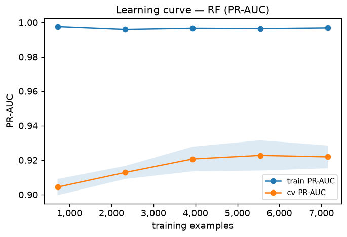
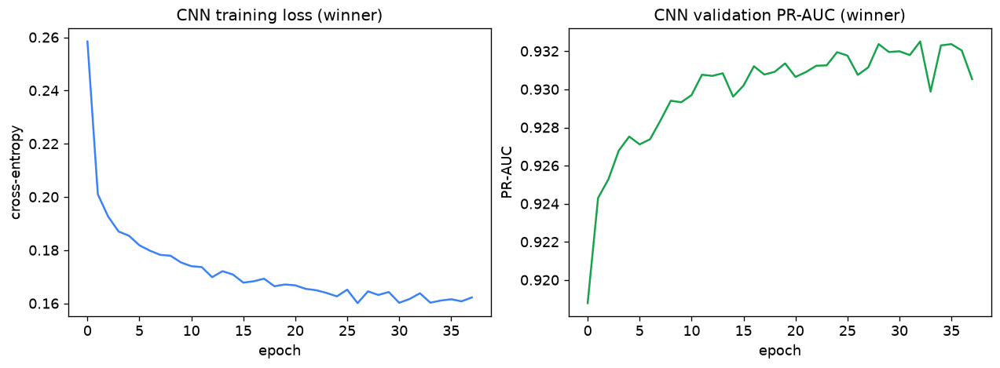
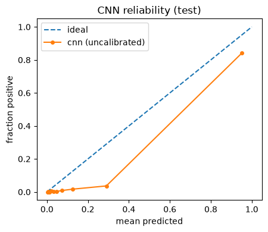
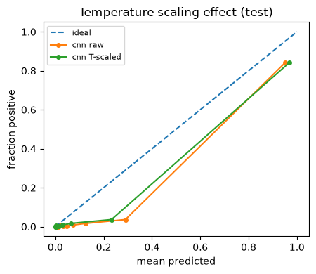
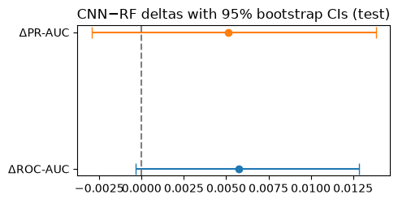

Pulsar Candidate Selection (HTRU2)
Random Forest triage of pulsar candidates (v1) plus a 1D-CNN replication of the published CNN-on-HTRU2 experiment (v2) — dataset-only, no hardware. This page tracks what has actually been done, with verified numbers and honest misses.
Repository · Notebook v1 (source) · Notebook v2 CNN (source) · Notebook v3 (source)
§1 Data card — provenance & class balance
| Field | Value |
|---|---|
| Survey | High Time Resolution Universe (South), Parkes Observatory |
| Creator | R. J. Lyon, Univ. of Manchester — UCI ML Repository id 372, CC-BY 4.0 |
| Rows | 17,898 = 1,639 pulsars (9.16%) + 16,259 RFI/noise (90.84%) |
| Features | 8 continuous statistics from the folded pulse profile + DM–SNR curve; no sky position |
| Citation | Lyon, R. (2015). HTRU2. doi:10.24432/C5DK6R · Lyon et al., MNRAS 459(1), 2016 |

Imbalance ≈ 9.9:1 — plain accuracy is worthless here (91% by predicting all-zero), so everything is reported as ROC-AUC / PR-AUC / recall at a cost-chosen threshold.
§2 Method (locked)
Stratified 60/20/20 split before any weighting · logistic-regression baseline vs cross-validated Random Forest (PR-AUC-led grid) · Platt calibration on a dedicated validation fold · operating threshold from a written 10:1 miss-vs-false-alarm cost model, never default 0.5 · learning curve + permutation importance (never impurity importance).
| Model | Test ROC-AUC | Test PR-AUC | Prec / Recall @ T=0.10 |
|---|---|---|---|
| LogReg baseline | 0.977 | 0.934 | — |
| RF calibrated (400 trees, depth 20) | 0.976 ✓ (target ≥ 0.97) | 0.933 | 0.867 / 0.896 |
Honest miss: the joint target (recall ≥ 0.90 at precision ≥ 0.90) was not met — best recall at precision ≥ 0.90 is 0.884. Calibration improved validation Brier (0.0169→0.0161) but test Brier stayed flat (0.0167→0.0171). Reported as-is.

Reliability diagram (test): calibrated vs raw RF.

Learning curve (PR-AUC): still rising — more labels would help.

Permutation importance: profile_kurtosis dominates — pulse shape (sharp lighthouse blink vs noise smear) carries the signal, DM statistics confirm. Matches the astrophysics.
§3 v2 — 1D-CNN replication (paper-style comparison)
Replicates the UCSD ECE228 Report6 setup on the identical v1 splits: 32-config grid over blocks × channels × kernel × pool × ReLU/tanh, SGD, val PR-AUC selection. Winner: 1 block, 16ch, k=2, no pool, ReLU. Image-based systems (MICNN/PICS) are out of scope — HTRU2 contains no plot pixels.
| Model | Acc | ROC-AUC | PR-AUC | Pos-prec / Pos-rec @0.5 |
|---|---|---|---|---|
| RF (v1) | 0.980 | 0.976 | 0.933 | 0.913 / 0.863 |
| MLP baseline | 0.974 | 0.968 | 0.914 | 0.940 / 0.768 |
| 1D-CNN (v2) | 0.970 | 0.982 | 0.938 | 0.786 / 0.927 |
CNN wins ranking quality and recall; RF wins accuracy and calibration (Brier 0.0167 vs CNN 0.0284, uncalibrated). Literature (quoted): Lyon 2016 GH-VFDT 0.978/0.899/0.829; Report6 CNN 0.984/0.993/0.975 — our CNN does not reach Report6; gap documented (their split/balancing unspecified, ours fixed and stricter). Temperature scaling is the named next step.

CNN training loss + validation PR-AUC (winning config).

CNN reliability (test, uncalibrated) — overconfidence visible, hence the calibration next step.
§4 v3 — temperature scaling + paired significance
Single-parameter temperature scaling (T=0.718, fit on val NLL): test NLL 0.1228→0.1119, Brier 0.0284→0.0258 — gap to RF (0.0167) narrowed, not closed.
Bootstrap 95% CIs (B=2000, paired) include 0 for both deltas: ΔROC +0.0058 [−0.0003, +0.0128], ΔPR +0.0051 [−0.0030, +0.0138]. McNemar exact p=0.0001 at the 0.5 threshold — decisions differ significantly, in RF's favour (56 vs 21 discordant). Verdict: CNN ranks marginally better, RF decides significantly better.

Temperature scaling effect (test reliability).

CNN−RF deltas with 95% bootstrap CIs — both cross zero.
§5 Progress log
- Scoped the project — #15 Pulsar Candidate Selection.
Dropped the hardware track (radiation forecaster) as a poor fit for a systems profile; chose the dataset-only HTRU2 benchmark. Decision recorded in the notebook header. - Topic review submitted (2 pages).
Overview, importance, aims, method, expected outcomes — the skeleton this work follows (§1–10). - Reproducible notebook built & executed end-to-end.
Data cards, EDA, stratified split, baseline vs tuned RF, calibration + cost threshold, learning curve + permutation importance. Zero error cells. - v1.0 released on GitHub.
Source + executed notebooks, pinned requirements, cached data, README with verified results including misses. - This progress site published.
Data card, method, results, and progress log online via GitHub Pages. - v2: CNN replication executed & compared paper-style.
32-config 1D-CNN grid (SGD, val PR-AUC selection) on identical splits; CNN leads ROC/PR-AUC and recall, RF leads accuracy/calibration; Report6 gap documented. - v3: temperature scaling + paired significance.
You are here. T=0.718 narrows the Brier gap; bootstrap CIs include 0 (ranking lead not significant); McNemar p=0.0001 favours RF's 0.5-threshold decisions. Next: disagreement/error analysis, then the paper draft.
§6 Reproduce it
pip install -r requirements.txt (torch CPU: see note in requirements), then run either notebook top-to-bottom — data downloads automatically and every random step uses SEED=42. v2 compute: python cnn_grid.py (~10 min CPU) writes cnn_grid_results.json + cnn_best.pt, which the notebook reports. Site figures: python docs/plots.py; CNN figures are written by the v2 notebook itself.
Limitations, stated plainly: reproduces survey expert-vetting on one labelled dataset; discovers no new pulsars; threshold depends on the stated cost model.